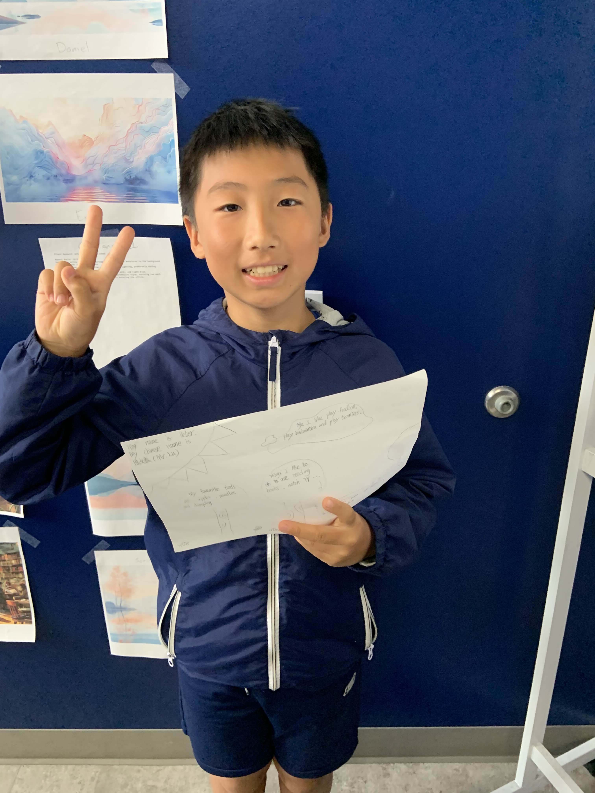

About Me

I'm Peter, also known by my Chinese name 陆文泰. I am from Shanghai, Yangpu. My favorite foods are apples and noodles. I enjoy reading books and watching TV in my free time. Additionally, I love playing sports such as football, badminton, and tennis.
Hobbies
I like to do a variety of activities, including reading books, watching TV, and engaging in outdoor sports. These hobbies help me relax and enjoy life.
Projects
This section will showcase my professional and personal projects. Check back soon for updates!